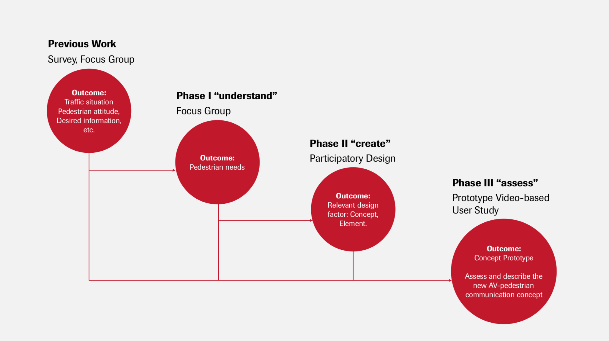
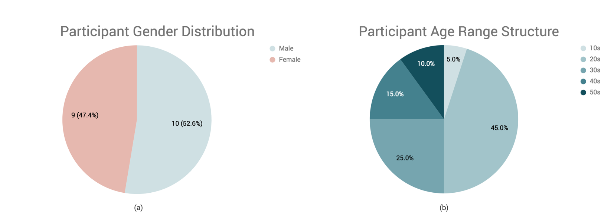

Timeline
July.2017 - May.2018
Timeline
July.2017 - May.2018
Location
Berlin, Germany
Basel, Switzerland
My Role
Master Thesis Work
Deliverables
Please understand that all works remain confidential since we haven't published the paper
Keyword:
Automated vehicle(AV)
Human-machine interaction
Focus group
Participatory design
Usability
AV-pedestrian communication
3D Unity
Supervised by Ms.Yuan Liu, Prof. Dr.-Ing. Matthias Rötting from Fakultät IV - Elektrotechnik und Informatik Mensch-Maschine-Systeme, and Prof. Dr.-Ing. Sebastian Möller from Quality and Usability Lab, Fakultät V - Verkehrs- und Maschinensysteme
In the the future of autonomous driving, pedestrians need additional information to compensate for the loss of interaction with human drivers. Previous research showed that a large majority of pedestrians sees a need to be informed about the current driving mode (autonomous vs. non autonomous driving) and the intention of the autonomous vehicle, preferably on the windshield.
To design and investigate a concept for the communication between autonomous vehicles and pedestrians in cross situations.
First, we conducted two focus group studies (15 participants) to explore deeper insights into the communication between autonomous vehicles and pedestrians. Based on the findings of these focus group studies, we created two participatory design sessions (8 participants) to discover how this communication is desired to look like from the pedestrians’ perspective. Finally, a communication concept was designed and tested in a user study (20 participants) by applying prototype videos. The user study was evaluated using a qualitative post-study interview and quantitative post-scenario questionnaires (7-point Likert scale).
Based on what we learned from the focus group studies and the participatory design studies, we designed a communication concept that referred to a traffic light system with traffic light colors and relevant patterns, a settled crossing time for pedestrians, and a virtual driver for distinguishing between autonomous and nonautonomous driving mode. The video-based user study showed that the designed concept enabled effective communication while an autonomous vehicle is approaching a pedestrian. The pedestrians' insights were age-dependent: Feedback from younger adults (below 30 years of age) was more positive in general; the virtual driver signal was important for elder people (over 30 years of age).
A communication concept that refers to a traffic light system with traffic light colors and relevant patterns, a settled crossing time for pedestrians, and a virtual driver is effective for pedestrians to perceive the intention of autonomous vehicles in a future of autonomous driving.